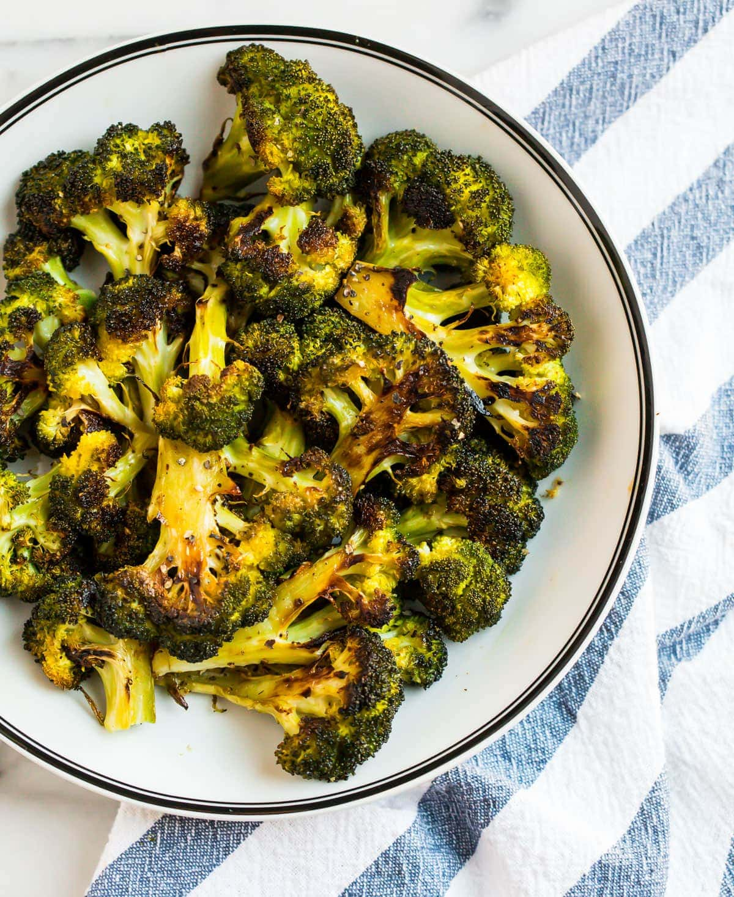

What is it?
It's broccoli that has been washed, sprinkled in oil and other spices, then roasted in an oven
until its texture is crispy. The best kind of roasted broccoli is slightly burnt to give it a crunchier texture.
Ingredients and equipment
- Broccoli, chopped into individual florets, four heads.
- Sea salt, fine or coarse, 1 gram.
- Ground black pepper, 5 grams.
- (Optional) Ground paprika, 5 grams.
- Conventional oven.
- Olive oil, 40mL.
- Baking sheets, parchment.
Recipe
- In a conventional oven, pre-heat to around 400F.
- If broccoli is not chopped, chop broccoli into florets, wash, and dry thoroughly.
- Spread baking sheet onto a pan and spread chopped broccoli onto a single layer, leave at half an inch of space around each floret.
- Mix salt, pepper, and optionally paprika into a separate bowl.
- Add olive oil to the pan containing broccoli and toss broccoli to ensure a thin even coating of oil on all florets.
- Add spice mixture to pan and toss broccoli to ensure even distribution of spices throughout pan.
- Set pan into oven at 400F for 15 minutes or until florets start to burn at the edges.
- Using oven mitts, take out pan, and let cool for three minutes.
- Serves two people.
Things to watch out for:
Ensure that brocooli is dried thoroughly during the washing step or the water will make the broccoli soggy. Use baking paper and not aluminum foil
to ensure a more even heat distribution. Do not bunch up broccoli or evaporation of water during heating
will not happen which makes the broccoli soggy.
Click here to return to home page.